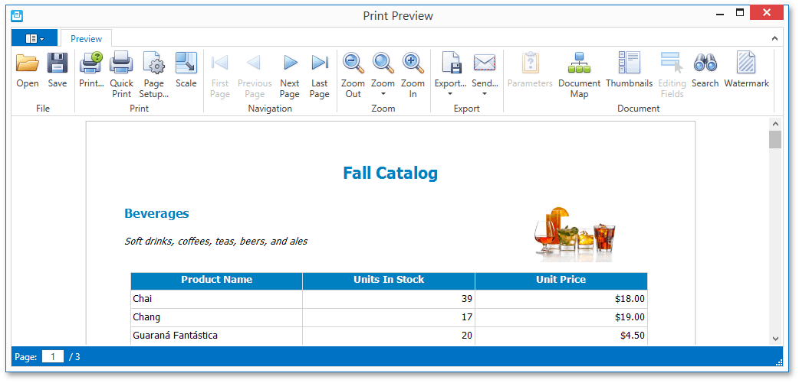

Print Preview for WPF
The documents in this section provide information on the capabilities of the Print Preview, which is used to display an interactive document preview.
The Print Preview provides a toolbar and menu that contain commands related to document viewing, navigating, exporting and printing. It also provides the Document Map for navigating throughout a document using bookmarks, the Parameters panel for editing report parameters, the Search panel for locating required data, etc.

File Management
Printing and Page Setup
- Print a Document Using the Print Dialog
- Print a Document Using Default Settings
- Change Print Settings Using the Page Setup Dialog
- Scaling
Navigating
- Navigate Between Pages
- Navigate Using Bookmarks
- Navigate Using Thumbnails
- Navigate Using the Hand Tool
- Search for a Specific Text
Interactivity
Zooming
Passing Parameters
Watermark
Exporting
- Exporting
- Copying to the Clipboard
- PDF-Specific Export Options
- HTML-Specific Export Options
- MHT-Specific Export Options
- RTF-Specific Export Options
- DOCX-Specific Export Options
- XLS-Specific Export Options
- XLSX-Specific Export Options
- CSV-Specific Export Options
- Text-Specific Export Options
- Image-Specific Export Options